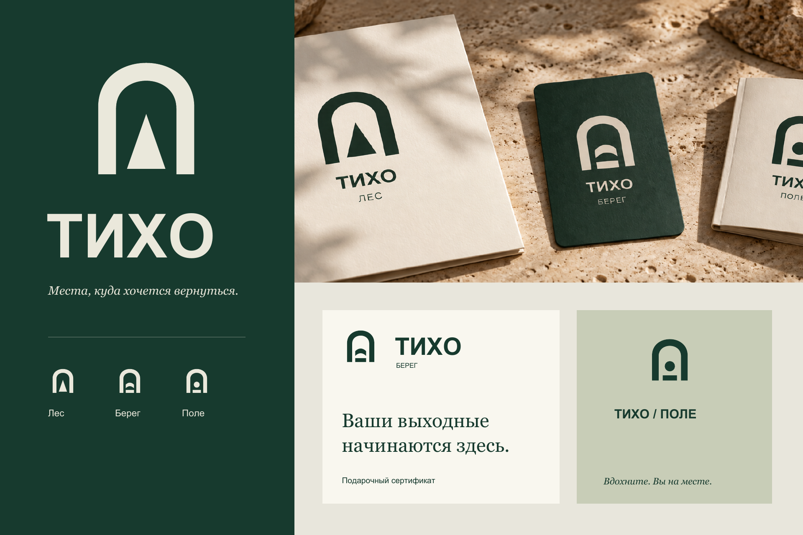
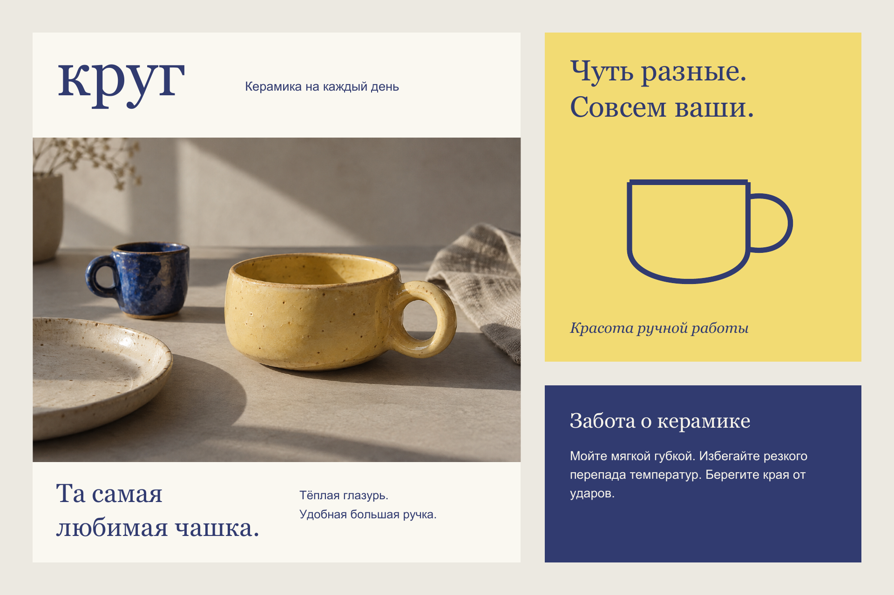
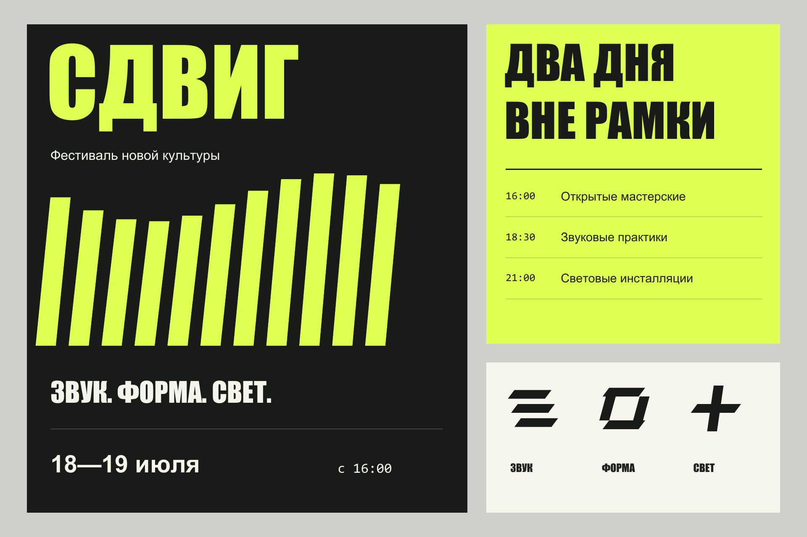
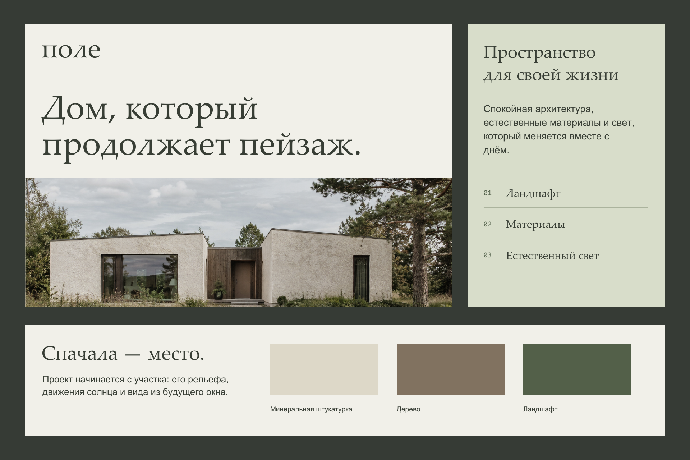
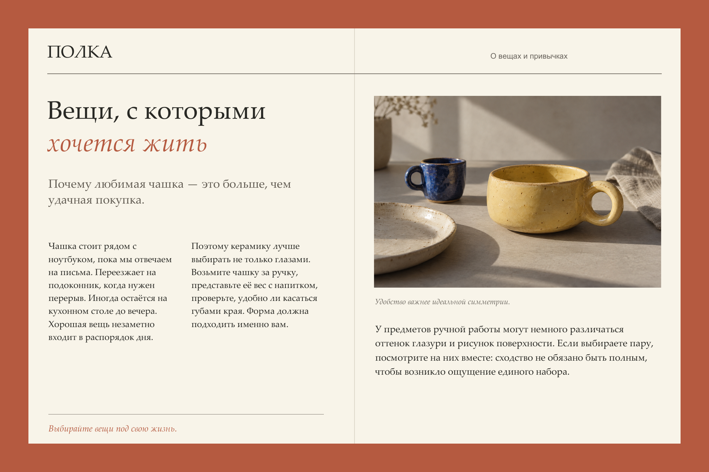
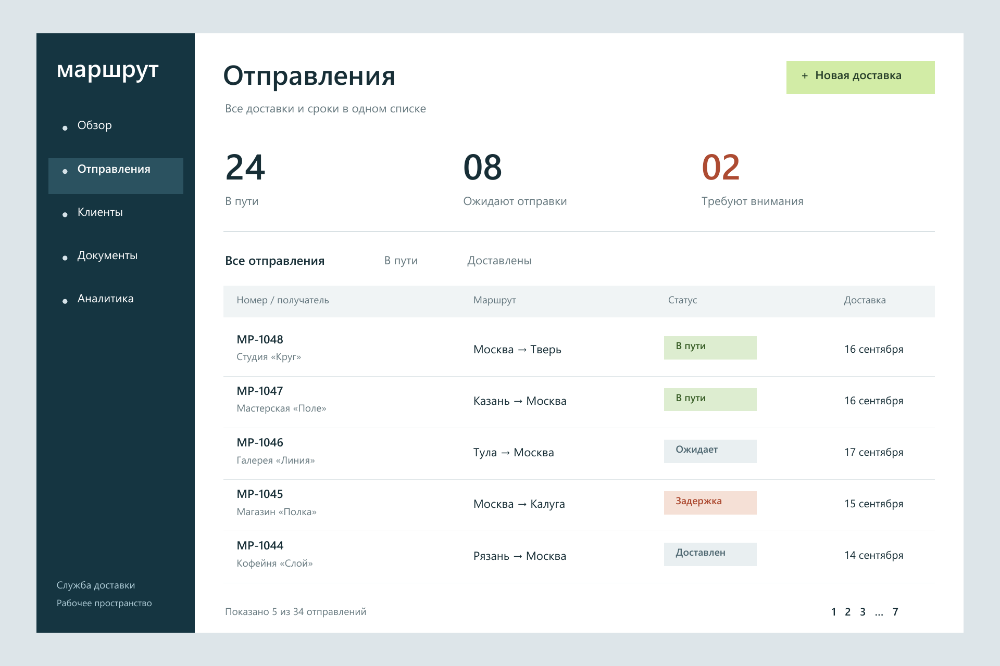

6 самостоятельных концепций
Графика / от знака до системы
Айдентика, карточки товаров, афиши, презентация, редакционная вёрстка и UI. У каждой задачи — своя композиция и характер.

Самостоятельные графические концепции, сентябрь 2026. Это не выполненные заказы перечисленных брендов.
Одна задача — одна визуальная система
В этих работах я исследую композицию, типографику, цвет и перенос одного решения на несколько носителей. Отправная точка — назначение макета: что человек должен увидеть и прочитать первым.





Что можно проверить
Макеты доступны в PDF: можно рассмотреть иерархию, интервалы, сетку и векторные элементы. Предметные и архитектурные изображения в концепциях созданы с помощью генерации; типографика, знаки и композиции собраны отдельно. МАРШРУТ — дизайн интерфейса, без подключения к службе доставки.